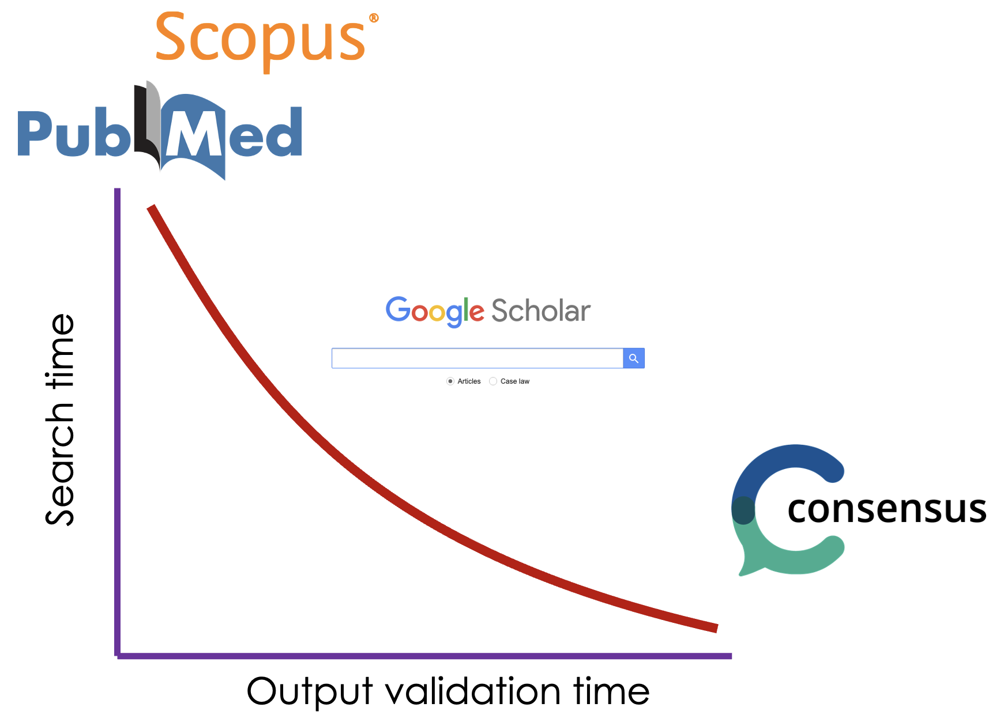

Week 2: In-depth Research (Part 1)
Objectives
By the end of this week, you will:
- Establish initial communication within their respective grops
- Understand how to conduct topic-specific literature searches
- Distribute tasks among group members (reading, recording, editing, speaking, interviewing)
- Begin in-depth reading on their chosen topic
Key Ideas from Previous Weeks
- The recording should not be a formal presentation of a paper
- Use the skeptical watchlist while researching (available on this book and on PRADO)
Group Formation
- Groups have been created based on your 1st or 2nd choice preferences
- Each group consists of 3-5 members for balanced workload and efficiency
- Reach out to your group members and start collaborating
- Be mindful of others’ needs and ensure everyone feels comfortable
- If you encounter any issues, please reach out to us for solutions
In-depth Research
Getting Started
We gave you an initial paper for each one of the topics. Now it is time to review the one for your topic so that you can pull out some ideas and some more refereces that can guide you deeper into a concrete direction. Here are a few questions that might help you extract the relevant information from the paper:
- What’s the main focus of the article?
- Which sections interest you most?
- Do you need additional context to understand certain parts?
- What other studies inspired the authors?
Finding Additional Resources
When conducting online scientific literature searches, you have several options, each with its own trade-offs between search time and output validation time.
- Traditional Databases
- Platforms like Scopus and PubMed offer comprehensive, curated collections of scientific literature.
- These databases typically require more search time but provide highly reliable, peer-reviewed results.
- Google Scholar
- A popular middle-ground option that balances search speed and result breadth.
- It offers a user-friendly interface and wide coverage across various disciplines.
- While faster than traditional databases, it may include some non-peer-reviewed content.
- AI-Powered Tools
- Emerging platforms like Consensus use artificial intelligence to streamline the search process.
- These tools significantly reduce search time but may require additional effort to validate outputs.
Validation of search results is crucial, especially when using faster, more inclusive search methods. Google Scholar may include non-peer-reviewed materials, preprints, or even non-academic sources, which can affect the reliability of your research if not properly vetted. AI-powered tools, while efficient, may occasionally “hallucinate” or generate inaccurate information, particularly when dealing with specific data points or less common topics. These tools might also misinterpret context or nuance in complex scientific discussions. Therefore, it’s essential to cross-reference findings, verify sources, and critically evaluate the relevance and accuracy of search results, regardless of the platform used.

When choosing a search method, consider your research needs:
- For thorough, highly validated results, traditional databases may be preferable.
- For quick, broad searches, Google Scholar offers a good balance.
- For rapid literature reviews or initial explorations, AI-powered tools can be valuable, but exercise caution and verify findings.
Remember, the faster the search process, the more time you might need to spend validating the results. Choose the approach that best fits your research goals and time constraints, and always maintain a critical eye when reviewing your findings.
Accessing papers:
- Use university network or VPN for paywalled journals
- Try different versions if available
- Reach out to us if you can’t access a paper
Alternative Research Methods
Explore other platforms for ideas as well as for information:
YouTube channels (e.g., kurzgesagt, AsapSCIENCE, WIRED)
Podcasts (e.g., Brain Inspired, StarTalk, Lex Fridman Podcast)
Remember to use your skeptical watchlist when exploring these sources!
Tasks for This Week
- Connect with your group members
- Review the suggested paper for your topic
- Conduct initial literature searches
- Distribute reading tasks among group members
- Begin in-depth reading of your assigned materials
Potential questions we anticipate
Q: How many papers do we need to read?
A: There’s no set minimum or maximum. Focus on quality and relevance.
Q: What if I find conflicting information in different papers?
A: This is normal in science! Use your skeptical watchlist to evaluate the papers’ credibility. If you can’t decide, consider discussing both perspectives in your podcast – competing accounts are part of scientific progress.
Next Steps
In the next week, we’ll focus on narrowing down your topic into a central and manageable idea and on defining your target audience.